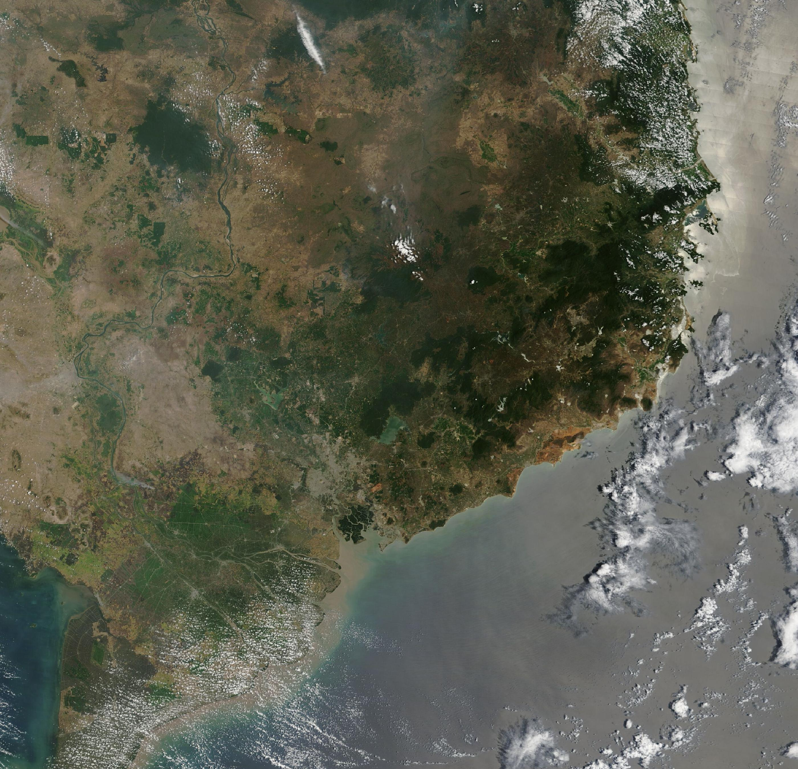
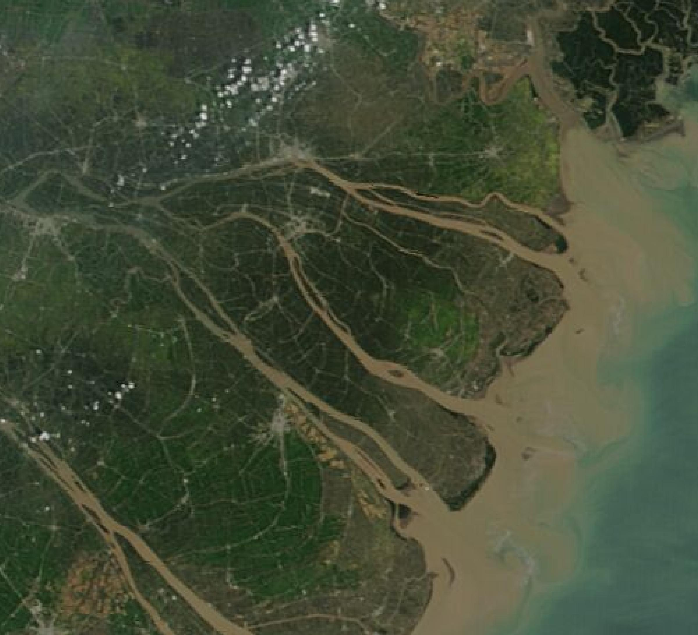
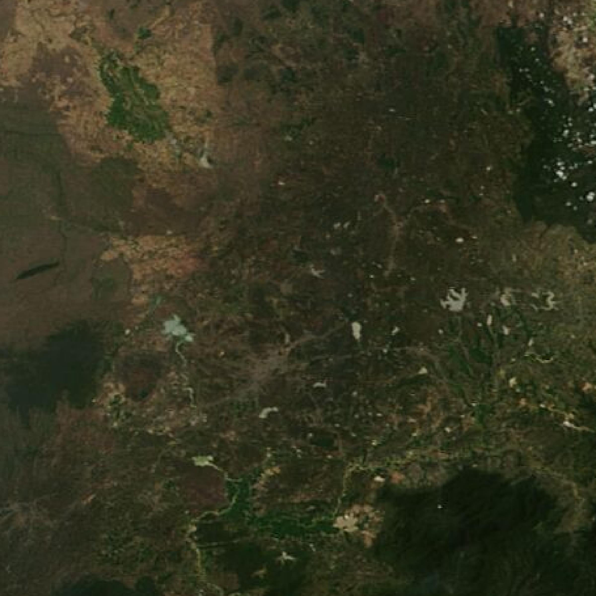
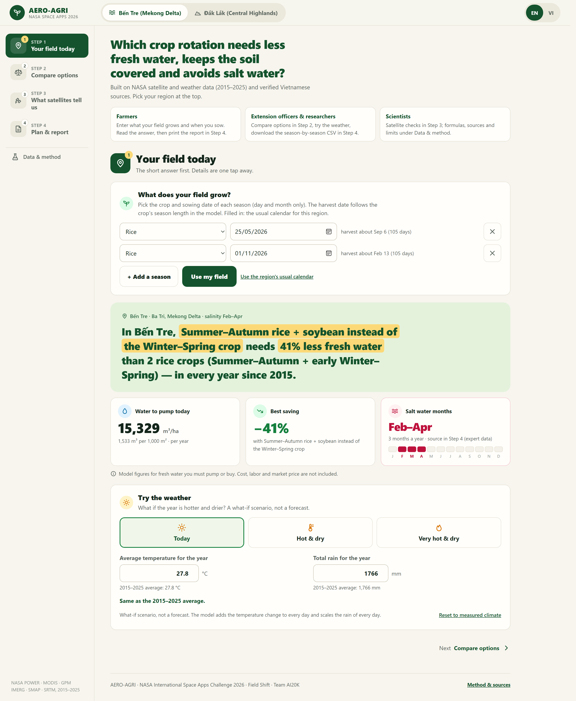
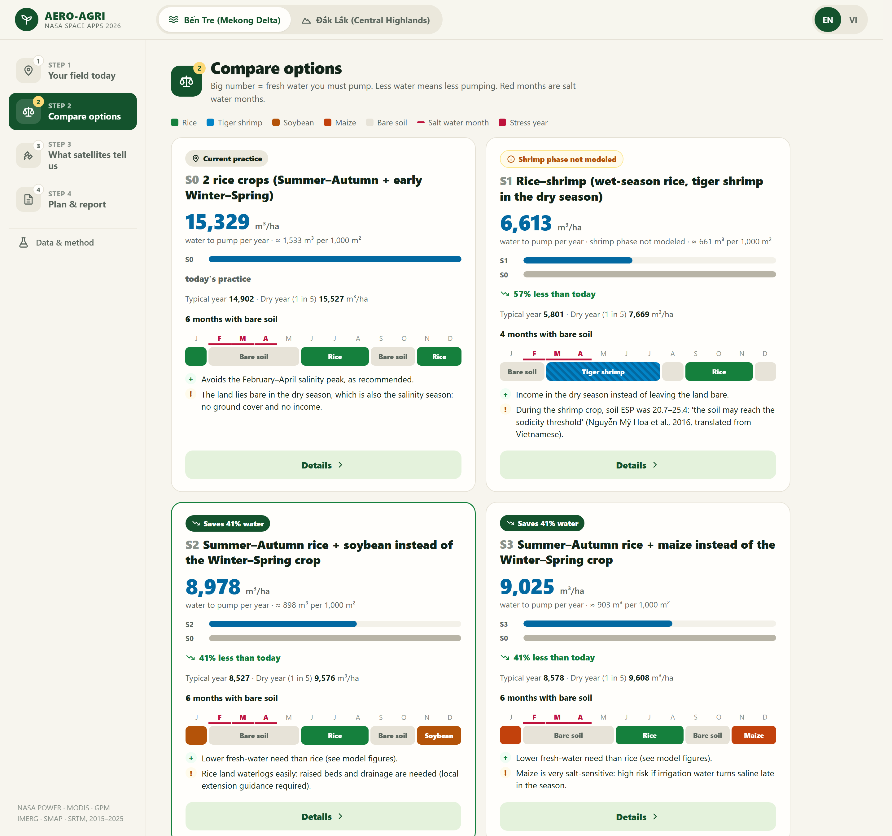
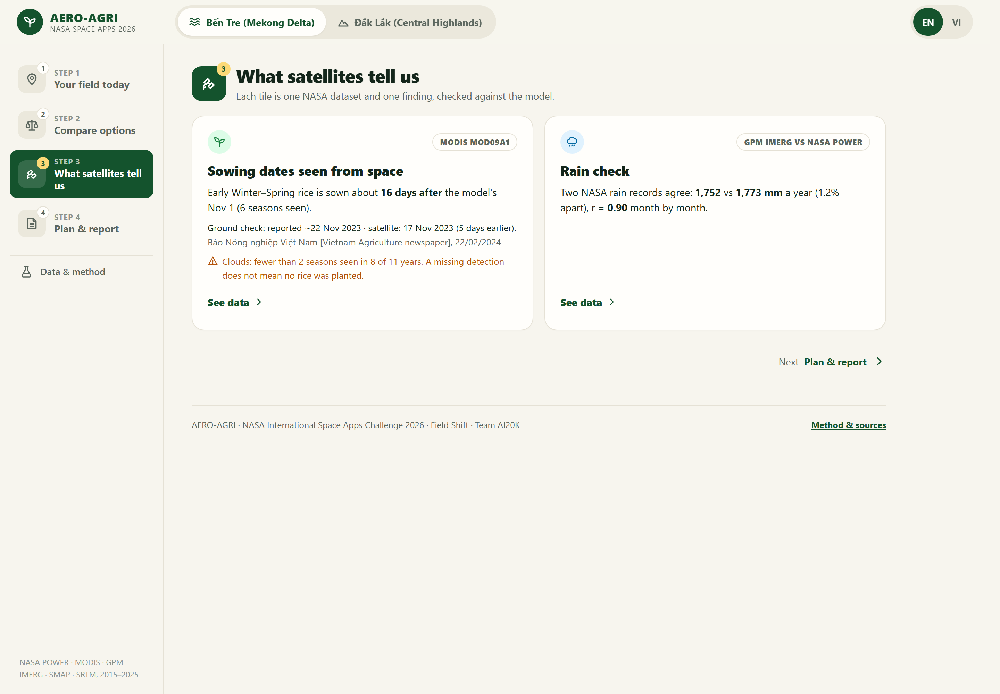
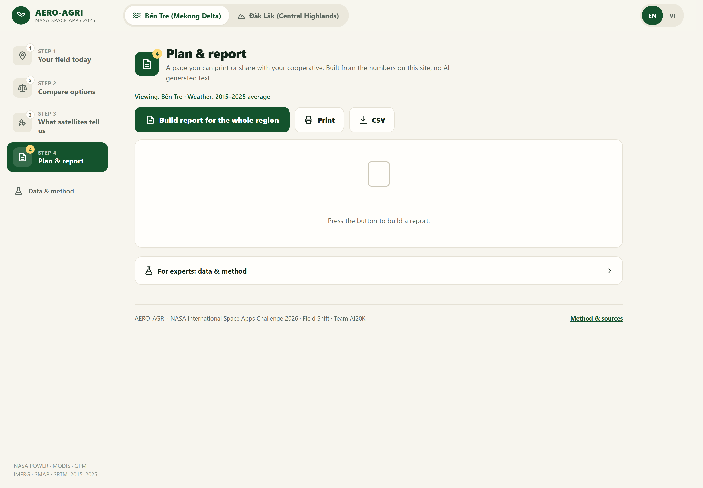

AERO-AGRI
Which crop rotation needs less fresh water, keeps the soil covered and avoids salt water? Cách luân canh nào ít tốn nước ngọt, giữ đất được che phủ và tránh được nước mặn?
Salt water arrives exactly when farms need fresh water Nước mặn xâm nhập đúng lúc đồng ruộng cần nước ngọt nhất

fresh water pumped every year for two rice crops nước ngọt bơm mỗi năm cho 2 vụ lúa hiện tại

coffee is irrigated from groundwater; cover crops fight erosion but use water cà phê tưới bằng nước ngầm; cây phủ chống xói mòn nhưng tốn thêm nước
From orbit to field: six NASA datasets audit one transparent water model Từ quỹ đạo tới đồng ruộng: 6 bộ dữ liệu NASA kiểm chứng một mô hình nước minh bạch

41% less fresh water — in every crop year since 2015 Ít hơn 41% nước ngọt — đúng ở cả 10 vụ năm kể từ 2015
Summer–Autumn rice + soybean instead of Winter–Spring rice (maize S3: 9,025 · 41% less) Lúa Hè Thu + đậu tương thay vụ Đông Xuân (ngô S3: 9,025 · ít hơn 41%)
Independent satellites check the model Các vệ tinh độc lập kiểm tra chéo mô hình
2023: satellite 17 Nov vs ~22 Nov reported 2023: vệ tinh 17 Nov so với báo ~22 Nov
annual difference · r = 0.90 month by month chênh lệch năm · r = 0.90 theo từng tháng
tracks the modeled coffee water deficit, 10 dry seasons bám sát thiếu hụt nước cà phê qua 10 mùa khô
One page from field to decision — for farmers, advisers and scientists Một trang từ ruộng tới quyết định — cho nông dân, khuyến nông và nhà khoa học



Honest about the gaps — ready to test in the field Thẳng thắn về giới hạn — sẵn sàng kiểm chứng ngoài đồng ruộng
- 50 km weather gridLưới thời tiết 50 km
- Soil type at Ba Tri not yet verifiedLoại đất tại Ba Tri chưa đo kiểm thực địa
- Shrimp phase, salinity dynamics, yields and costs not modeledPha tôm, diễn biến độ mặn, năng suất và chi phí chưa mô phỏng